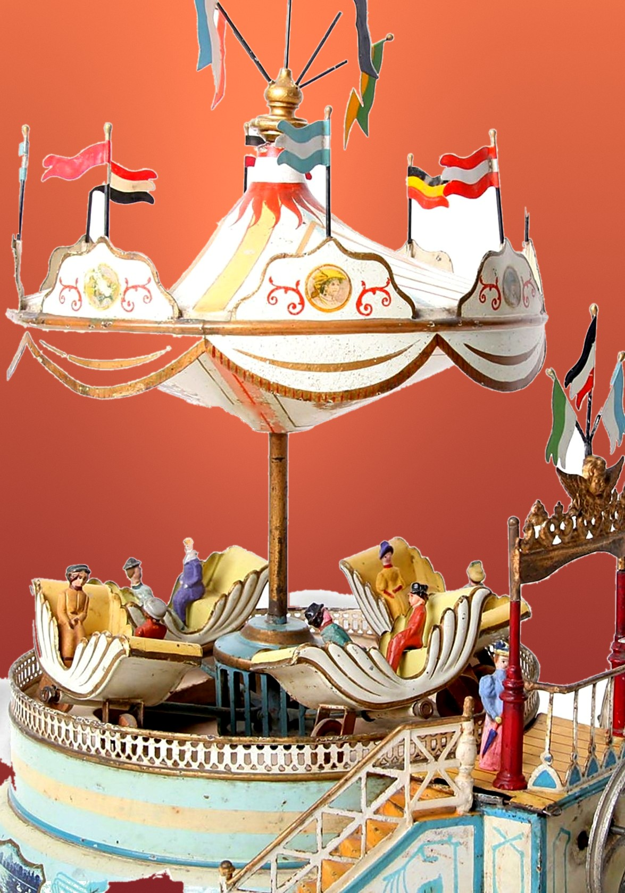

Bing
Bing



Bericht · Auktion vom 17. Januar 2026
Einziges bekanntes Exemplar: Märklins Musik-Karussell von 1903 erzielt 150.000 €
Das Karussell Nr. 1131 mit Spielwerk ist das einzige bisher bekannte Exemplar. Warum Sammler aus aller Welt mitboten – und welche Raritäten die nächste Auktion bringt.
Hans Georg Grupp
Geschäftsführer · 17. Januar 2026
Bericht lesen →
Geschäftsführer · 17. Januar 2026